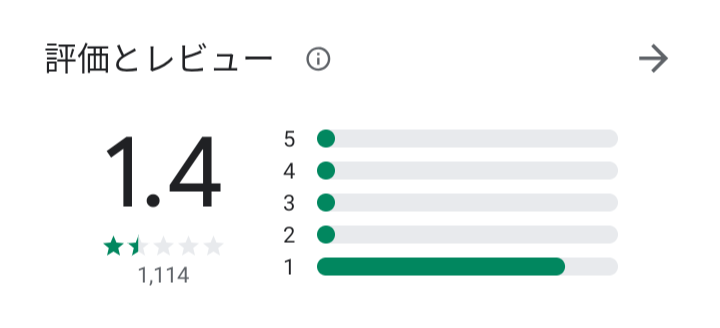
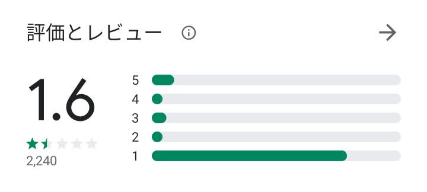

「ゆうちょ通帳アプリ」があまりの完成度の低さに炎上中
今年の2月にゆうちょ銀行がリリースした新しいアプリ、「ゆうちょ通帳アプリ」が不具合続出で絶賛炎上中です。
前身アプリ「ゆうちょダイレクト残高照会アプリ」が7月末に終了するのを期に、ゆうちょが新アプリへの移行を促しているのですが、そのアプリの出来があまりにもお粗末なものでした。
GooglePlayストアの評価
5月26日時点↓

7月11日時点↓

ここまで炎上しているアプリは後にも先にも見たことない。iOSのApp Storeでも1600件のレビューで平均2.2を獲得しています。
アプリの不満点
このアプリ、実際に自分もインストールしてみたのですが、起動すればなんとびっくり、開発者向けオプションが封印されています。Androidには開発者向けオプションという、少し上級者向けの設定項目が用意されているのですが、そこから少しでもカスタマイズをしていると、そもそもアプリの起動すらさせてもらえません。
上級者向けとはいえど、充電中はスリープモードにしないだとか、フォントサイズを調整するだとか、色を識別しにくい人のための設定だとか、Androidを使っていれば手を伸ばしている人も多いであろう、設定項目なんですね。
自分もビューポートの幅を広げているので、この時点でゆうちょ通帳アプリは使えませんでした。自分の使っているスマホはデフォルトがかなり狭めになっているので、広げずに使うことは大変厳しい。開発者向けオプションと通帳アプリのどっちを取るかと言われれば前者です。
確かに、USBデバックなどセキュリティを脅かしそうなオプションは存在するけれど、それはそれで個別に対応してください。他の金融機関のアプリで、開発者向けオプション全般が使えないものなんて聞いたことない。これはアップデートで是非対応してほしい。
他にもPlayストアのレビューを読み漁ると、他にもいろいろ出てきます。
- そもそもアプリが立ち上がらない、再起動を繰り返す （←これが一番多い）
- 画面がいきなりブラックアウトになる
- 電話番号認証から先に進めない、認証の電話がかかってこない
リリースからおよそ半年一度もアップデートがない
個人的に問題だと思うのは、アプリをリリースした後のサポートですね。
このアプリは2020年2月14日にリリースされ、2月25日に一度アップデートされたのを最後、おおよそ5ヶ月間に 一度もアップデートがありません。
かなりマズいですね。オフラインで動くアプリならともかく、これは金銭を取り扱う 金融機関のアプリ なんですよ。リリース後は開発者の手を離れてそれっきり…なんて金融のアプリは使う気になれません。そのアプリがスマホに存在するだけでセキュリティ上の脅威となりえます。
ゆうちょはPlayストアのレビューの惨状を見かねて、下のようなコピペ文面をbotのように返信しはじめました。
この度は、ご不便をおかけし大変申し訳ございません。 ご指摘いただきました不具合について、アプリの改修を予定しております。 改修が完了しましたら、アプリストアにてお知らせいたしますので、改めてご利用をご検討いただけますと幸いです。 今後もお客様のご意見を真摯に受け止め、アプリの改善に努めてまいります。 どうぞよろしくお願いいたします。
これ、火に油を注いでますね…。おそらく下請けに開発させているとかだと思いますが、あくまで「予定」であって、今のところ何も進んでなさそう。
アプリ出しすぎ問題
ついでにダメ押し。日本郵便・ゆうちょがリリースしているアプリ一覧。
- 日本郵便
- 郵便の料金などを調べられるやつ
- ゆうパックスマホ割
- ゆうパックのラべルを印刷できるアプリ？
- ゆうちょ銀行 ATM検索
- なぜわざわざアプリを入れてATMの場所を検索するのか。公式サイトで十分だろう。
- ゆうちょPay
- 金融機関のアプリなのにパスワードがコピペできない（＝パスワード管理ソフト非対応）、さらには、そもそも郵便局がPayに対応していないという逸品
- 【お店専用】ゆうちょPayパートナー
- ゆうちょmijica（ミヂカ）
- J-Debitという似たような機能がゆうちょ銀行のキャッシュカードに備わっているけれどそれは諦めてしまっったのだろうか。
- ゆうちょ認証アプリ
- Google認証システムアプリやAuthyを使えるようにしたらいいのに。それが無理ならゆうちょ通帳アプリに統合で。
- ゆうちょダイレクト残高照会アプリ（2020年7月末終了）
- これも2年以上アプデがなく放置されていた
- ゆうちょ通帳アプリ（←New！）
その数、お店用のものを除いても8個あります。ちょっと出し過ぎじゃあないですか。郵便アプリ、ゆうちょ銀行アプリ、ゆうちょPayパートナーだけで十分です。それ以外は統廃合してください。誰が郵便・ゆうちょのためにわざわざストレージ容量を割いて8つもアプリ入れるんですかね…